하나의 시작점으로부터 다른 모든 정점까지의 최단거리를 구하는 알고리즘
- 음수의 가중치를 가지고 있는 간선을 아예 사용할 수 없다.
-
⭐ 다익스트라 알고리즘이 DP 문제인 이유는
최단 거리는 여러 개의 최단 거리로 이루어져 있기 때문- 즉, 작은 문제가 큰 문제의 부분 집합에 속해 있다고 볼 수 있기 때문
- 다익스트라는 하나의 최단 거리를 구할 때, 그 이전까지 구했던 최단 거리의 정보를 그대로 사용
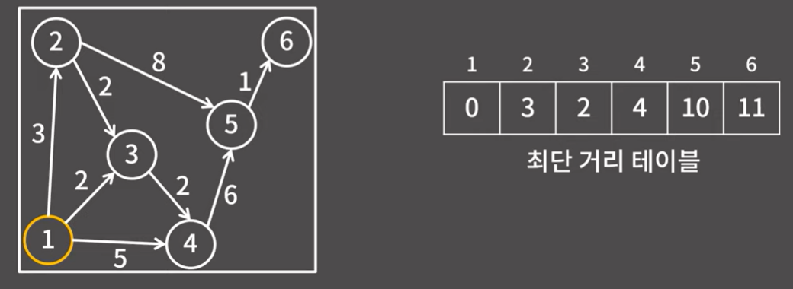
- 1을 시작점으로 잡았을 때 각 노드마다의 최단 경로
알고리즘의 수행과정
- 배열을 일단 무한대로 초기화한다. (최단 경로, 즉 최솟값을 구하는 것이기 때문)
- 일단 1번 노드를 시작점으로 잡고 시작했다. (문제에 따라 시작점은 달라질 수 있음)
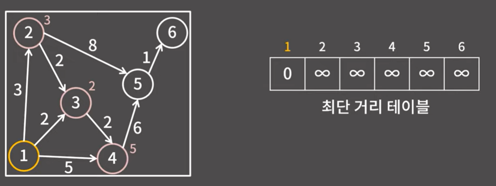
- 1번에서 갈 수 있는 정점들 2, 3, 4번 정점 중에서 가장 가까운건 3번 정점이기 때문에 3번 정점까지의 거리를 2로 확정한다.
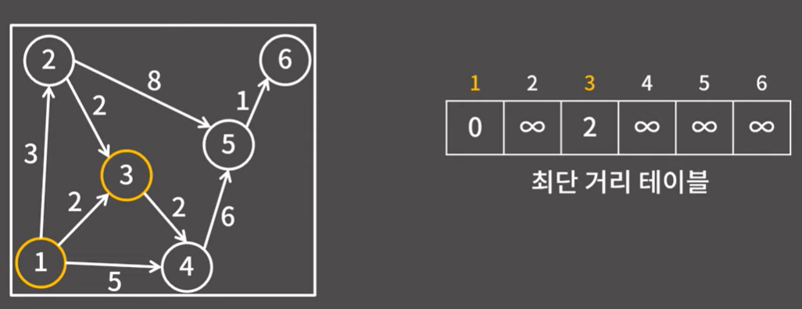
- 다음 거리가 확정된 1, 3번 정점에서 갈 수 있는 정점은 2, 4번 정점이다.
- 2번 정점까지의 거리는 3이고, 4번 정점까지의 거리는 4가 된다.
- 둘 중에서 더 가까운건 2번 정점이어서 2번 정점까지의 거리를 3으로 확정한다.
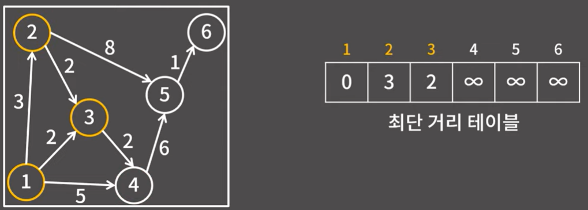
- 1, 2, 3번 정점에서 갈 수 있는 정점은 4, 5번 정점이다. 둘 중에서 가까운 정점은 4번 정점이어서 4번 정점까지의 거리를 4로 확정한다.
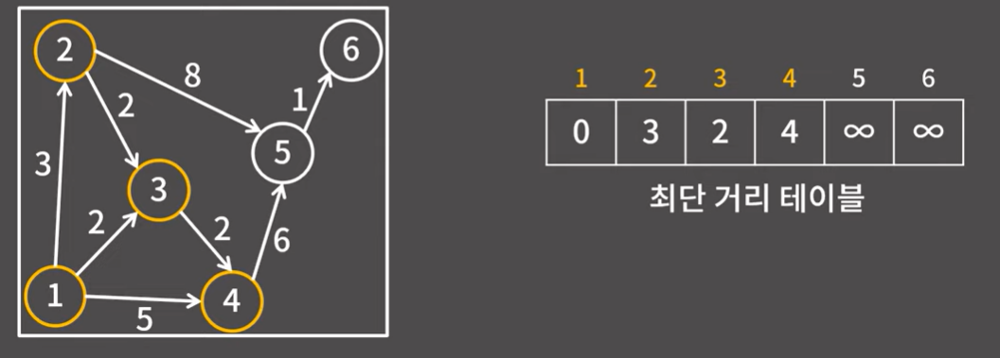
- 1, 2, 3, 4번 정점에서 갈 수 있는 정점은 5번밖에 없다. 바로 10으로 확정한다.
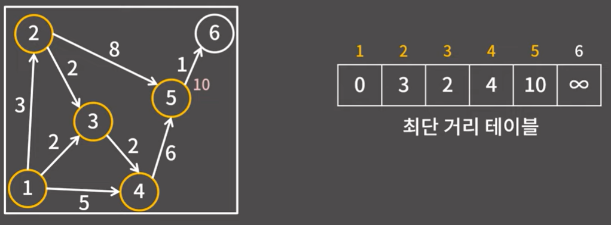
- 6번 정점의 거리는 11으로 바로 확정 가능하다.
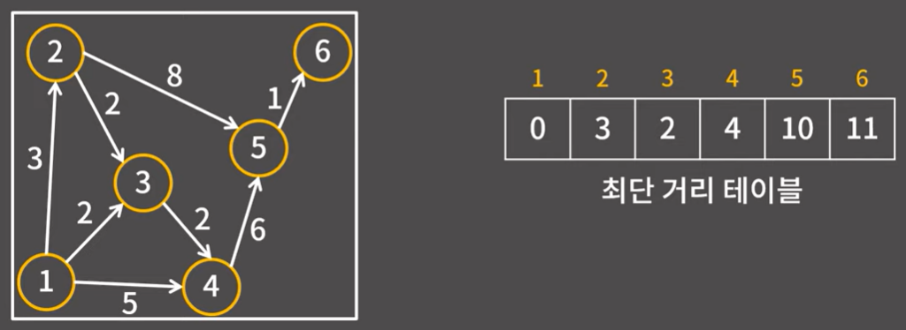
DP를 이용한 알고리즘의 수행과정
위 방식대로 DP를 이용하지 않고 구현하면 매 단계마다 간선을 훑어야 해서 O(VE)가 걸릴 수 있다. 하지만 새 정점을
추가할 때마다 테이블에 거리를 미리 계산해두고 최솟값을 찾으면 O(V^2 + E)로 수행이 가능하다.
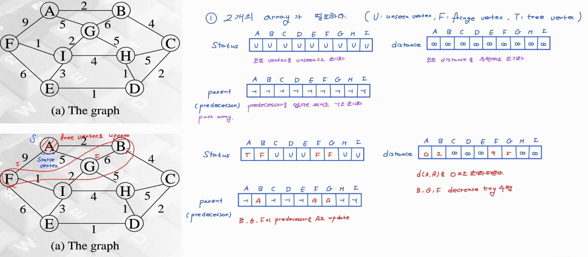
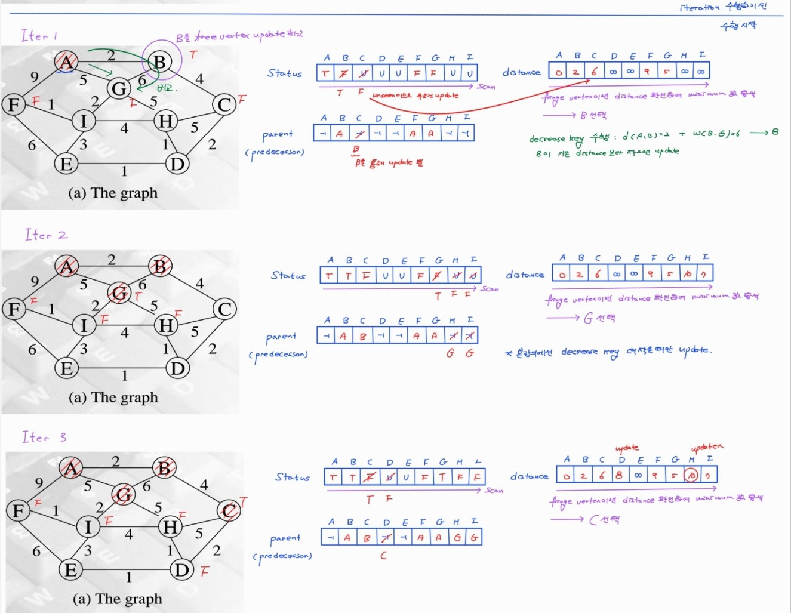
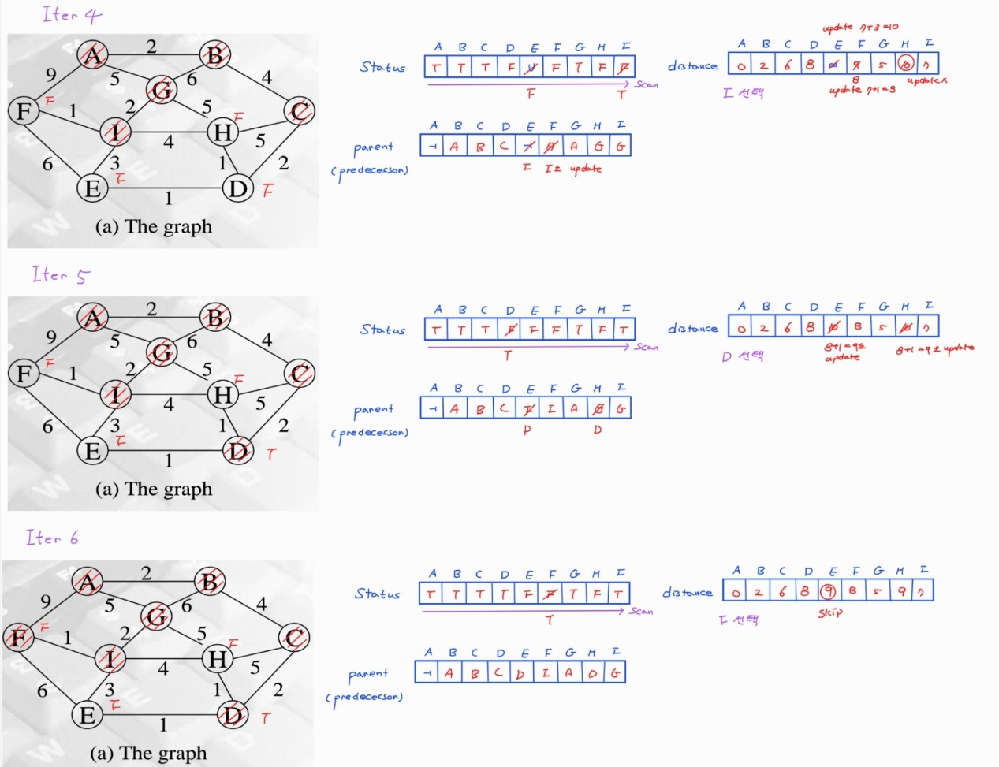
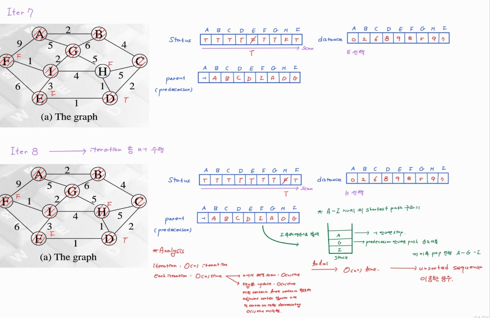
Java 예제 코드 (우선순위 큐)
import java.util.*;
public class DijkstraExample {
static class Edge {
int to, cost;
Edge(int to, int cost) {
this.to = to;
this.cost = cost;
}
}
static class Node implements Comparable<Node> {
int v, dist;
Node(int v, int dist) {
this.v = v;
this.dist = dist;
}
@Override
public int compareTo(Node other) {
return Integer.compare(this.dist, other.dist);
}
}
static final int INF = 1_000_000_000;
static int[] dijkstra(int n, List<List<Edge>> graph, int start) {
int[] dist = new int[n + 1];
Arrays.fill(dist, INF);
dist[start] = 0;
PriorityQueue<Node> pq = new PriorityQueue<>();
pq.offer(new Node(start, 0));
while (!pq.isEmpty()) {
Node cur = pq.poll();
if (cur.dist > dist[cur.v]) continue;
for (Edge next : graph.get(cur.v)) {
int nd = cur.dist + next.cost;
if (nd < dist[next.to]) {
dist[next.to] = nd;
pq.offer(new Node(next.to, nd));
}
}
}
return dist;
}
public static void main(String[] args) {
int n = 6;
List<List<Edge>> graph = new ArrayList<>();
for (int i = 0; i <= n; i++) graph.add(new ArrayList<>());
// 예시 간선 (단방향)
graph.get(1).add(new Edge(2, 3));
graph.get(1).add(new Edge(3, 2));
graph.get(1).add(new Edge(4, 5));
graph.get(2).add(new Edge(4, 1));
graph.get(2).add(new Edge(5, 7));
graph.get(3).add(new Edge(4, 2));
graph.get(3).add(new Edge(5, 8));
graph.get(4).add(new Edge(5, 6));
graph.get(5).add(new Edge(6, 1));
int start = 1;
int[] dist = dijkstra(n, graph, start);
for (int i = 1; i <= n; i++) {
if (dist[i] == INF) System.out.println(i + ": INF");
else System.out.println(i + ": " + dist[i]);
}
}
}